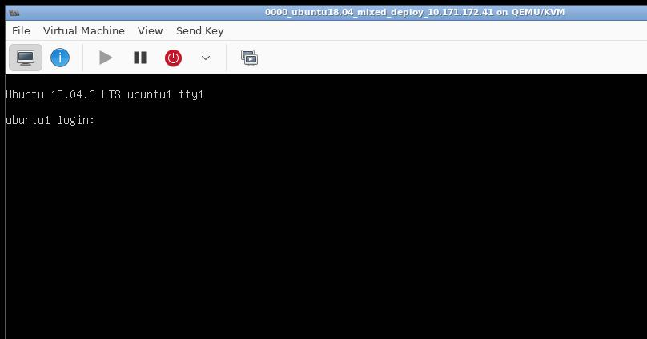
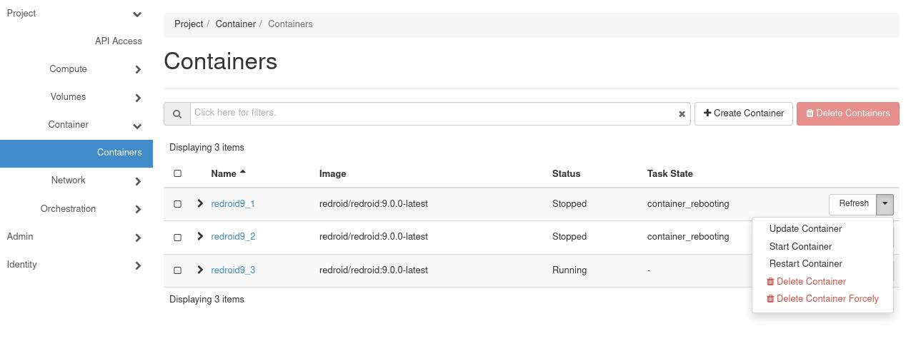

20250721
1. CentOS queens zun deployment
3 nodes with replaced docker images(rocky->queens):
[root@queen1 kolla]# docker images | grep zun | grep rocky
kolla/centos-source-zun-compute rocky 384975e8ebb3 5 years ago 1.07GB
kolla/centos-source-zun-api rocky 4293ca2bb6b1 5 years ago 1.04GB
[root@queen1 kolla]# docker images | grep kuryr | grep rocky
kolla/centos-source-kuryr-libnetwork rocky 1eb87543a31b 5 years ago 953MB
When create ext nework , failed with :

issue:
Unable to establish connection to http://10.171.172.24:9517/v1/containers?run=true: ('Connection aborted.', error(110, '\xe8\xbf\x9e\xe6\x8e\xa5\xe8\xb6\x85\xe6\x97\xb6'))
Failed to discover available identity versions when contacting http://10.171.172.24:35357/v3. Attempting to parse version from URL.
Unable to establish connection to http://10.171.172.24:35357/v3/auth/tokens: HTTPConnectionPool(host='10.171.172.24', port=35357): Max retries exceeded with url: /v3/auth/tokens (Caused by NewConnectionError('<urllib3.connection.HTTPConnection object at 0x7f60a3d8c0d0>: Failed to establish a new connection: [Errno 113] \xe6\xb2\xa1\xe6\x9c\x89\xe5\x88\xb0\xe4\xb8\xbb\xe6\x9c\xba\xe7\x9a\x84\xe8\xb7\xaf\xe7\x94\xb1',))
Failed to discover available identity versions when contacting http://10.171.172.24:35357/v3. Attempting to parse version from URL.
Unable to establish connection to http://10.171.172.24:35357/v3/auth/tokens: HTTPConnectionPool(host='10.171.172.24', port=35357): Max retries exceeded with url: /v3/auth/tokens (Caused by NewConnectionError('<urllib3.connection.HTTPConnection object at 0x7f529babd0d0>: Failed to establish a new connection: [Errno 113] \xe6\xb2\xa1\xe6\x9c\x89\xe5\x88\xb0\xe4\xb8\xbb\xe6\x9c\xba\xe7\x9a\x84\xe8\xb7\xaf\xe7\x94\xb1',))
2. CentOS queens zun deployment(linuxbridge mode)
The same issue as above./
3. dadfailed issue
issue:
2: eth0: <BROADCAST,MULTICAST,UP,LOWER_UP> mtu 1500 qdisc pfifo_fast state UP group default qlen 1000
link/ether 52:54:00:f1:14:6a brd ff:ff:ff:ff:ff:ff
inet 10.171.172.23/24 brd 10.171.172.255 scope global noprefixroute eth0
valid_lft forever preferred_lft forever
inet6 fe80::43ae:554e:9564:d787/64 scope link tentative noprefixroute dadfailed
valid_lft forever preferred_lft forever
inet6 fe80::f07e:e9f6:352b:994c/64 scope link noprefixroute
valid_lft forever preferred_lft forever
solved via:
[root@queen3 ~]# cat /etc/machine-id
334e69d6bacf423a8b821ba7a3cdd9a4
[root@queen3 ~]# sudo chmod ugo+w /etc/machine-id
[root@queen3 ~]# sudo cat /dev/null > /etc/machine-id
[root@queen3 ~]# sudo systemd-machine-id-setup
Initializing machine ID from KVM UUID.
[root@queen3 ~]# sudo chmod ugo-w /etc/machine-id
[root@queen3 ~]# cat /etc/machine-id
ec8dd68a129e4eeab9b31bbf9e5701a5
4. enable virsh console
Via:
sudo systemctl enable serial-getty@ttyS0.service --now
Then virsh console vmname you could get a console login.
5. redeploy queens(ubuntu)
Use docker images then retag:
docker load<1804zunphoneimages.tar && docker load<etcd.tar && docker load<rocky.tar
docker rmi kolla/ubuntu-source-zun-api:queens kolla/ubuntu-source-zun-api:queensback kolla/ubuntu-source-zun-compute:queens kolla/ubuntu-source-zun-compute:queensback && docker tag kolla/ubuntu-source-zun-compute:rocky kolla/ubuntu-source-zun-compute:queens && docker tag kolla/ubuntu-source-zun-api:rocky kolla/ubuntu-source-zun-api:queens && docker rmi kolla/ubuntu-source-kuryr-libnetwork:queens && docker tag kolla/ubuntu-source-kuryr-libnetwork:rocky kolla/ubuntu-source-kuryr-libnetwork:queens
6. OS verification environment
Create a new network:

Disable dhcppv4:

Create vm via import existing disk image:

Select ubuntu1804_mixed_deploy_10.171.172.41.qcow2:

Select Ubuntu 18.04 LTS for installing options:

specify memory/cpu:

Specify the vm name:

Add 41vdb.qcow2 for the second vm disk:

Select 10.171.172_network for the network source:

Add the second network which also uses the same network:


click Beging installation for starting the created vm:

Imported another 2 vms, 3-nodes cluster listed as:

Examine the environment:
ssh root@10.171.172.41
......
root@ubuntu1:~# source /etc/kolla/admin-openrc.sh
root@ubuntu1:~# openstack appcontainer list
+--------------------------------------+------------+------------------------------+---------+---------------------+----------------+-------+
| uuid | name | image | status | task_state | addresses | ports |
+--------------------------------------+------------+------------------------------+---------+---------------------+----------------+-------+
| f99294a3-e747-4001-a639-506354970756 | redroid9_1 | redroid/redroid:9.0.0-latest | Running | None | 10.171.172.171 | [] |
| 70139649-9b5d-4190-b721-ffdc67c48db2 | redroid9_2 | redroid/redroid:9.0.0-latest | Stopped | container_rebooting | 10.171.172.178 | [] |
| 39474c90-8ca0-4ca7-8a21-09ab9ab859f0 | redroid9_3 | redroid/redroid:9.0.0-latest | Running | None | 10.171.172.168 | [] |
+--------------------------------------+------------+------------------------------+---------+---------------------+----------------+-------+
Fetch the horizon password:
root@ubuntu1:~# cat /etc/kolla/passwords.yml | grep -i keystone_admin
keystone_admin_password: hO3wJGfQZzig1t2eUZsSKwAbnUTprpel27FO2hx4
login with admin and keystone_admin_password:

bug-fix for disable image validation:
$ docker cp zun_api:/var/lib/kolla/venv/lib/python2.7/site-packages/zun/conf/api.py .
$ cat api.py
43 cfg.BoolOpt('enable_image_validation',
44 default=False,
45 help="Enable image validation.")
46 ]
$ docker cp api.py zun_api:/var/lib/kolla/venv/lib/python2.7/site-packages/zun/conf/api.py
$ docker exec -it zun_api bash
# rm -f /var/lib/kolla/venv/lib/python2.7/site-packages/zun/conf/api.pyc
# exit
$ docker restart zun_api
Start the container:

# openstack appcontainer show redroid9_1 | grep status_reason
| status_reason | Docker internal error: 500 Server Error: Internal Server Error ("IpamDriver.RequestAddress: Requested ip address {'subnet_id': u'9171905d-523a-4374-bddd-d3699a59f65b', 'ip_address': u'10.171.172.171'} already belongs to a bound Neutron port: a3f3373d-3a61-4a13-95b3-958a9945a0e0").
Stop and recreate again:
for i in {1..3}; do openstack appcontainer stop redroid9_$i; done
for i in {1..3}; do openstack appcontainer delete redroid9_$i; done
Create the appcontainer instance via:
# openstack appcontainer run --name redroid9_ubuntu1 --image-pull-policy=ifnotpresent --net network=15723fae-abdd-4a22-8c11-73607fbda740 --cpu 4 --memory 8192 --privileged --host ubuntu1 redroid/redroid:9.0.0-latest androidboot.redroid_width=1080 androidboot.redroid_height=1920 androidboot.redroid_dpi=480 androidboot.redroid_gpu_mode=guest androidboot.redroid_fps=120
Internal Server Error (HTTP 500) (Request-ID: req-21a92c7c-e33d-46de-b2c6-45b823789a7e)
After apply the above image validation bugfix, create:
openstack appcontainer run --name redroid9_ubuntu1 --image-pull-policy=ifnotpresent --net network=15723fae-abdd-4a22-8c11-73607fbda740 --cpu 4 --memory 8192 --privileged --host ubuntu1 redroid/redroid:9.0.0-latest androidboot.redroid_width=1080 androidboot.redroid_height=1920 androidboot.redroid_dpi=480 androidboot.redroid_gpu_mode=guest androidboot.redroid_fps=120
openstack appcontainer run --name redroid9_ubuntu3 --image-pull-policy=ifnotpresent --net network=15723fae-abdd-4a22-8c11-73607fbda740 --cpu 4 --memory 8192 --privileged --host ubuntu3 redroid/redroid:9.0.0-latest androidboot.redroid_width=1080 androidboot.redroid_height=1920 androidboot.redroid_dpi=480 androidboot.redroid_gpu_mode=guest androidboot.redroid_fps=120
openstack appcontainer run --name redroid9_ubuntu3 --image-pull-policy=ifnotpresent --net network=15723fae-abdd-4a22-8c11-73607fbda740 --cpu 4 --memory 8192 --privileged --host ubuntu3 redroid/redroid:9.0.0-latest androidboot.redroid_width=1080 androidboot.redroid_height=1920 androidboot.redroid_dpi=480 androidboot.redroid_gpu_mode=guest androidboot.redroid_fps=120
Examine the result:
# openstack appcontainer list
+--------------------------------------+------------------+------------------------------+---------+------------+----------------+-------+
| uuid | name | image | status | task_state | addresses | ports |
+--------------------------------------+------------------+------------------------------+---------+------------+----------------+-------+
| 599aea74-f487-4545-b366-6b38c7b15431 | redroid9_ubuntu1 | redroid/redroid:9.0.0-latest | Running | None | 10.171.172.181 | [] |
| 882f5554-2eb9-48d9-a880-8ec861aa8a6d | redroid9_ubuntu2 | redroid/redroid:9.0.0-latest | Running | None | 10.171.172.172 | [] |
| 3f4d8f74-69b4-4d3f-9a69-5b94add17c85 | redroid9_ubuntu3 | redroid/redroid:9.0.0-latest | Running | None | 10.171.172.180 | [] |
+--------------------------------------+------------------+------------------------------+---------+------------+----------------+-------+
root@ubuntu1:~# docker ps | grep zun | grep 599aea74
77fa40f90722 redroid/redroid:9.0.0-latest "/init qemu=1 androi…" 3 minutes ago Up 3 minutes zun-599aea74-f487-4545-b366-6b38c7b15431
Login to ubuntu2, verify the instance:
root@ubuntu2:~# docker ps | grep zun | grep 882f
791b49035b5f redroid/redroid:9.0.0-latest "/init qemu=1 androi…" 3 minutes ago Up 3 minutes zun-882f5554-2eb9-48d9-a880-8ec861aa8a6d
root@ubuntu2:~# docker exec -it 791b49035b5f sh
ubuntu2:/ # getprop | grep boot | grep com
[dev.bootcomplete]: [1]
[ro.boottime.vendor.hwcomposer-2-1]: [1381625505509]
[sys.boot_completed]: [1]
[sys.logbootcomplete]: [1]
Login to ubuntu3 , verify the instance:
root@ubuntu3:~# docker ps | grep zun | grep redroid
1b9998f0726b redroid/redroid:9.0.0-latest "/init qemu=1 androi…" 4 minutes ago Up 4 minutes zun-3f4d8f74-69b4-4d3f-9a69-5b94add17c85
root@ubuntu3:~# docker exec -it zun-3f4d8f74-69b4-4d3f-9a69-5b94add17c85 sh
ubuntu3:/ # getprop |grep boot | grep com
[dev.bootcomplete]: [1]
[ro.boottime.vendor.hwcomposer-2-1]: [1309493725053]
[sys.boot_completed]: [1]
[sys.logbootcomplete]: [1]
Stop and delete instance:
for i in {1..3}; do openstack appcontainer stop redroid9_ubuntu$i; done
for i in {1..3}; do openstack appcontainer delete redroid9_ubuntu$i; done